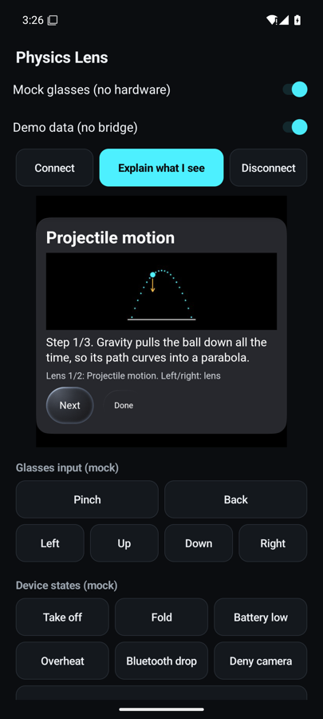
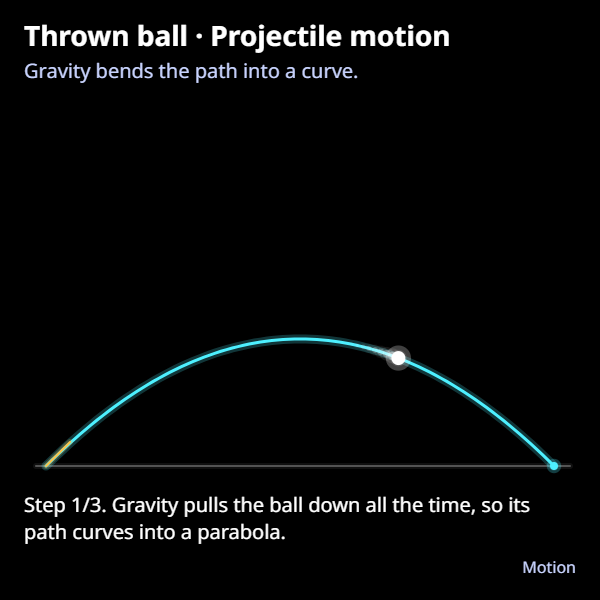
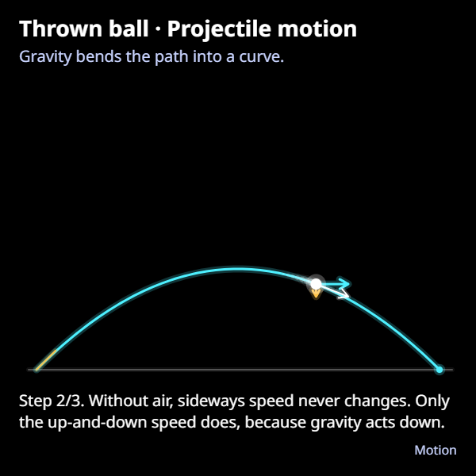

Look at anything. See the physics inside it.
Meta Ray-Ban Display glasses: look at an object, pinch, see an animation of how it works.

1Look

2Pinch

3See
The camera sees what you hold, so you never describe it, and the answer sits over the object.
| Claim | Label | Setup |
|---|---|---|
| 7 objects, 29 lenses, prerendered; 30 fps; 125 screens and steps pass | Tested on | Laptop, headless Chrome, 600x600. Not on glasses |
| First load 214 KB gzipped, 5 requests | Tested on | Laptop, Meta's test gate passes |
| Detection: 18 of 18 test photos right (7 objects, 4 unrelated) | Tested on | Dev stand-in (Claude Haiku), 1 run each. Not Gemini |
| Android app: connect, pinch, one photo, result card | Tested on | Pixel 8, Meta Mock Device Kit. Phone camera stands in for glasses |
| Registration, camera, pinch input and speech on real Ray-Ban Display | Built, not on glasses | Untested on real glasses |
| Web App installed on glasses by QR | Built, not on glasses | Untested. Test plan written |
| Refuses to explain people; clip playback from the phone app | Planned | Not built |
Public demo (Web App; check it is up):
https://lens.167-71-139-39.sslip.io/
Team: TODO (human)
Facts: Meta_Challenge/Submission.md, claims table, 14 Nov.